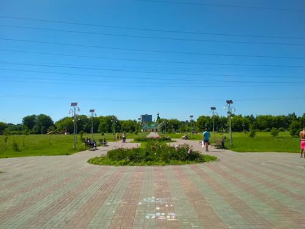

-  写真第2枚" title="コシノ→ヰヒノ：2019夏 -> 写真第2枚（クリックして完全版を見る）">
- 写真第3枚" title="コシノ→ヰヒノ：2019夏 -> 写真第3枚（クリックして完全版を見る）">


- 写真第6枚" title="コシノ→ヰヒノ：2019夏 -> 写真第6枚（クリックして完全版を見る）">
- 写真第7枚" title="コシノ→ヰヒノ：2019夏 -> 写真第7枚（クリックして完全版を見る）">
- 写真第8枚" title="コシノ→ヰヒノ：2019夏 -> 写真第8枚（クリックして完全版を見る）">

- 写真第10枚" title="コシノ→ヰヒノ：2019夏 -> 写真第10枚（クリックして完全版を見る）">